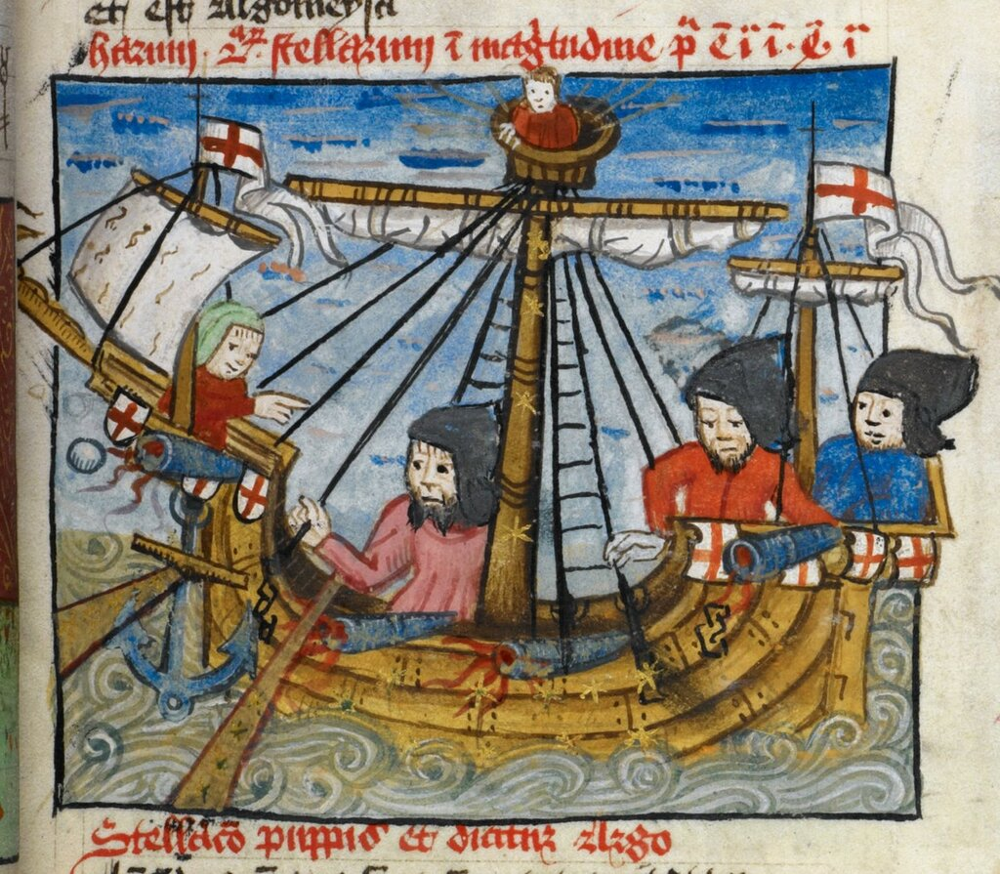

Итак, мы установили, что существовал морской флаг, на белом полотнище которого был изображен красный иерусалимский крест. Что флаг этот назывался иерусалимским. Но известно, что Иерусалим не имеет выхода к морю и в ту эпоху у него не было своего флота. Так кому служили экипажи кораблей, несущих этот флаг?
Прежде, чем вернуться к обсуждению этого вопроса, скажем несколько слов о формировании такого понятия, как морской флаг и чем этот флаг отличается (если отличается) от национального флага. (Военно-морские флаги требуют отдельного разговора, который, вполне возможно, состоится у нас в будущем.)

Корабль в море, несущий флаги Св. Георгия. Миниатюра из манускрипта Arundel 66 f. 45, Британская библиотека
Обычай обозначать с помощью какого-либо знака или символа владельца или собственника корабля, выходящего в открытое море, появился очень давно. Потом, уже в римском законодательстве, сформировалось понятие союза владельцев морских судов, союза корабельщиков. Мы встречаем его в Дигестах Юстиниана (530-533 гг.), в Книге третьей (Dig. 3.4.1pr. Gaius 3 ad ed. provinc.) (Извините за длинную цитату, желающие могут ее спокойно пропустить)
Neque societas neque collegium neque huiusmodi corpus passim omnibus habere conceditur: nam et legibus et senatus consultis et principalibus constitutionibus ea res coercetur. paucis admodum in causis concessa sunt huiusmodi corpora: ut ecce vectigalium publicorum sociis permissum est corpus habere vel aurifodinarum vel argentifodinarum et salinarum. item collegia romae certa sunt, quorum corpus senatus consultis atque constitutionibus principalibus confirmatum est, veluti pistorum et quorundam aliorum, et naviculariorum, qui et in provinciis sunt…
Quibus autem permissum est corpus habere collegii societatis sive cuiusque alterius eorum nomine, proprium est ad exemplum rei publicae habere res communes, arcam communem et actorem sive syndicum, per quem tamquam in re publica, quod communiter agi fierique oporteat, agatur fiat.
(Гай). Не предоставляется всем вообще учреждение (право учреждать) ни товарищества, ни коллегии, ни союза (corpus), ибо и законами, и сенатусконсультами, и конституциями принцепсов это дело ограничивается. В силу весьма редких причин разрешаются союзы этого рода. Например, разрешено образовывать союз участникам в сборе государственных налогов или для разработки золотых приисков или серебряных рудников и соляных варниц. Равным образом в Риме существуют некоторые общества, которые утверждены в качестве союзов сенатусконсультами и конституциями принцепсов, как-то: пекарей и некоторых других (ремесленников) и союзы корабельщиков, которые существуют и в провинциях.
§ 1. Те, которым разрешено образовать союз под именем коллегии, товарищества или под другим именем того же рода, приобретают свойство иметь по образцу общины (res publica) общие вещи, общую казну и представителя (actor) или синдика, посредством которых, как и в общине, делается и совершается то, что должно делаться и совершаться сообща.
(Пер. И. С. Перетерского)
Изучение средневековых статутов основных приморских городов Средиземноморья (к примеру, Марсель (1253), Анкона (1397)) и Балтики (Гамбург (1270), Любек (1299)) дает нам основания для вывода, что уже в тринадцатом веке подобные союзы корабельщиков, превратившиеся в компании или гильдии, предписывали капитанам принадлежащих им судов нести свой флаг. Под давлением портовых властей эти флаги постепенно заменялись на флаг того города, из которого корабль вышел. Со временем такие атрибуты, как Сертификат властей порта (Sea Letter) и обозначение названия порта приписки на флаге корабля стали обязательным элементом каждого судна, выходящего в открытое море. Так появились первые морские флаги. Нарушение этого правила давало основание считать корабль-нарушитель пиратским.
Мы не можем достоверно сказать, когда обязательной стала практика нести на купеческих кораблях национальный флаг. Работы первых исследователей этой темы дают ссылку на мемуар Клейрака (Estienne Cleirac, (1583-166.?)) " Sur les livrées ou couleurs des Pavilions des Navires pour la connaissance et distinction de chaque Nation qui met a la mer", приложенный к его известной книге "Us et costumes de la mer, divisées en 3 parties : I. De la Navigation. II. Du Commerce naval et contracts maritimes. III. De la Jurisdiction de la marine...., 1647 ), в котором утверждается, что флаги национальной принадлежности появились на купеческих судах в эпоху крестоносцев. Подъем таких флагов на кораблях диктовался необходимостью обозначить принадлежность каждого корабля к определенной национальной эскадре, входящей в состав флота крестоносцев. Однако обязательное присутствие симвала креста на крестоносных флагах потребовало различия их по цвету креста и цвету фона, на котором он находится. Основным символом считался крест красного цвета; святой престол жаловал его правителям стран и городам, которые приняли участие в крестовом походе. Так, красный крест на серебряном фоне (крест святого Георгия) был пожалован королям Англии и таким городам, как Флоренция и Генуя. Красный крест был пожалован затем также Португалии и городу Милан. Мы еще поговорим позже о том, какое развитие в истории получили эти первые флаги, родившиеся в эпоху крестовых походов.
Впервые явное указание на необходимость каждому кораблю нести национальный флаг мы находим лишь в указе короля Франции Карла V от 7 декабря 1373 года:
Item, tout navire allant par la mer et obeyssant au roy de France, a qui quil soit, ne quelque baniere quil porte, doibvent porter les banyeres et estandartz, lenseigne dudit admiral, et en iceulx ledit admiral peult mettre banieres, estandars, enseignes, trompettes, menestreux' a son plaisir
Каждый выходящий в море корабль, принадлежащий подданному короля Франции… должен нести его знамена и штандарты, флаги адмирала, а также может иметь флаги, штандарты, инсигнии, оркестр и музыкантов по усмотрению адмирала.
Цитируется по тексту Ордонанса, приложеному к сборнику документов «Black Book of the Admiralty», Rolls Edition, vol. I. p. 443, ссылка на манускрипт из Британского Музея Sloane MS. 2423)
Ну вот теперь, приобщившись к очень краткой истории морского флага, вернемся к нашей теме – флагу Пяти Крестов, или Иерусалимскому флагу. Первый вывод, который мы для себя должны сделать: не следует путать морской Иерусалимский флаг с флагом Иерусалимского королевства.. Последний представляет собой желтый (золотой) иерусалимский крест на белом (серебряном) фоне и на кораблях его не поднимали. Для морского флага использовался красный иерусалимский крест на белом фоне. Какими первоначально были кресты, входящие в состав иерусалимского, достоверно не известно. Некоторые исследователи считают, что это были «костыльные кресты» (см. наш предыдущий пост), другие склоняются к мнению, что это были кресты греческие. Традиция связывает эти флаги с теми хоругвями, под которыми направились корабли участников Первого крестового похода в Святую землю. Мы не имеем подтверждающих эту версию документов. Как и того, что подобный флаг был символом первых защитников Святой земли, обосновавшихся в Иерусалиме в 1333 году с разрешения османских властей. Первые документы, которые подтверждают разрешение турецкого султана для защитников Святой земли регистрировать иностранные суда под флагом Иерусалима, находятся в архивах францисканцев в Иерусалиме и относятся к 1669 году. Они содержат требование, чтобы капитаном такого судна был обязательно католик. Согласно этим же документам всего в период между 1669 и 1822 годами было зарегистрировано под этим флагом 738 судов. В 1847 году папа Пий XI передал полномочия на регистрацию судов под иерусалимским флагом вновь назначенному Латинскому Патриарху Иерусалима. Регистрация судна под иерусалимским флагом была в то время самым удобным способом не только из-за предоставленных им привилегий, но и вследствие сокращения портовых и таможенных сборов с этих кораблей.
На первом этапе своего существования регистрация судов под иерусалимским флагом была прерогативой исключительно Франции, так как именно Франция получила от султана статут защитника всех святых мест и католических институтов на Святой земле, включая и пост Латинского Патриарха. О том, как случилось, что основная часть морской торговли в Восточном Средиземноморье оказалась под флагом Франции и контролируемом ею иерусалимским флагом, мы подробно поговорим в следующий раз. Здесь скажем лишь, что эксклюзивное право французов на ведение морской торговли в Леванте было аннулировано Берлинским договором 1878 года. Корабли под иерусалимским флагом были объявлены нейтральными и к концу XIX века их число сократилось до 15 малых судов. Последнее судно под флагом Иерусалима было зарегистрировано в 1893 году, а окончательно процедура регистрации была отменена в 1918 году. Однако, фактически это произошло еще в 1914 году, когда Германия объявила, что не рассматривает суда под флагом Иерусалима как нейтральные, а связывает их с Францией, отчего и считает эти корабли враждебными.
Далее, как было обещано, мы рассмотрим особый характер франко-турецких взаимоотношений в Леванте и попытки Англии разрушить этот исторически сложившийся порядок.